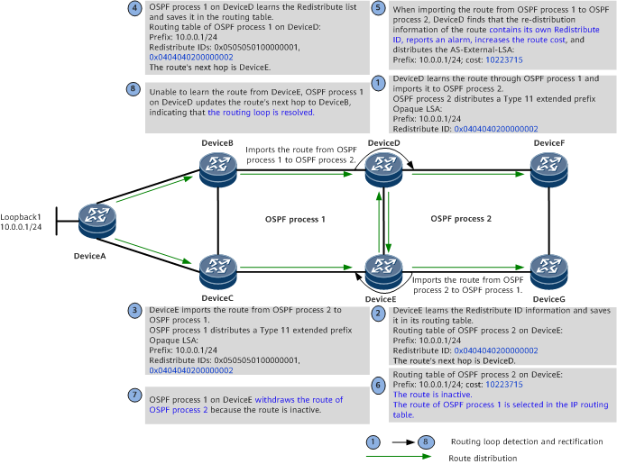
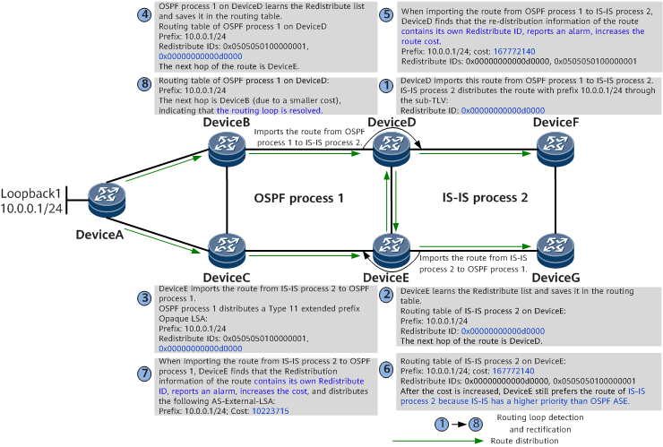
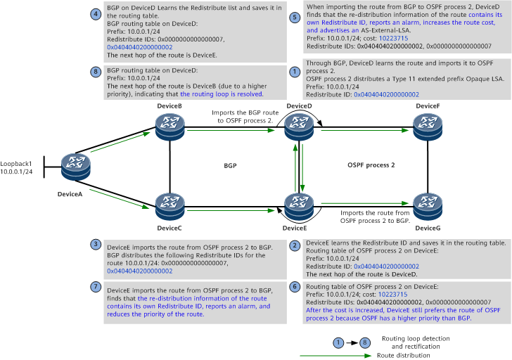

Understanding Routing Loop Detection for Routes Imported to OSPF
Routes of an OSPF process can be redistributed by another OSPF process or the process of another protocol (such as IS-IS or BGP) through route import or default route distribution. However, if a device that performs such a route import or default route distribution is incorrectly configured, routing loops may occur. OSPF can use the routing loop detection function to detect routing loops.

When OSPF is configured to import routes or distribute default routes, routing loop detection can be deployed to proactively detect whether routing loops exist in the topology and whether the routing loop prevention mechanism of the import route-policy takes effect. Routing loop alarms can be reported to locate configuration errors in time.
Generally, routing loop detection is not used to resolve routing loops. Increasing the metric value or adjusting the route preference value after a routing loop alarm is reported can temporarily prevent loops but may cause the traffic to be forwarded in an unexpected path. Therefore, loop detection can only be used temporarily. To eliminate routing loops in the long run, re-plan the network configuration.
Related Concepts
Redistribute ID
IS-IS uses a system ID as a redistribution identifier, OSPF and OSPFv3 use a router ID + process ID as a redistribution identifier, and BGP uses a VrfID + random number as a redistribution identifier. For ease of understanding, the redistribution identifiers of different protocols are all called Redistribute IDs. When routes are distributed, the information carried in the routes contains Redistribute IDs.
Redistribute List
A Redistribute list may consist of multiple Redistribute IDs. Each Redistribute list of BGP contains a maximum of four Redistribute IDs, and each Redistribute list of any other routing protocol contains a maximum of two Redistribute IDs. When the number of Redistribute IDs exceeds the corresponding limit, the old ones are discarded according to the sequence in which Redistribute IDs are added.
OSPF Redistribute ID Format
OSPF Redistribute IDs are distributed through the sub-TLV of the OSPFv2 Extended Prefix TLV carried in OSPFv2 Extended Prefix Opaque LSAs. Figure 1 shows the format of the Redistribute ID TLV.

Field |
Length |
Description |
|---|---|---|
Type |
16 bits |
TLV type. The value is 32770. |
Length |
16 bits |
Total length of the TLV (excluding the Type and Length fields). |
Flags |
8 bits |
Flags. Currently, the value is 0. |
Reserved |
24 bits |
Reserved field. |
Redistribute ID1 |
64 bits |
Device that imported the route last time and the Redistribute ID of a protocol on the device. |
Redistribute ID2 |
64 bits |
Device that imported the route last but one time and the Redistribute ID of a protocol on the device. This field is optional. |
Currently, OSPF allows a TLV to carry a maximum of two Redistribute IDs. If more than two routes are imported corresponding to a prefix, only the latest two Redistribute IDs are retained. If the received TLV carries more than two Redistribute IDs, only the first two Redistribute IDs are processed.
Cause (OSPF Inter-Process Mutual Route Import)
In Figure 2, DeviceA, DeviceB, and DeviceC run OSPF process 1; DeviceF and DeviceG run OSPF process 2; DeviceD and DeviceE run both of the processes. DeviceD imports routes from OSPF process 1 to OSPF process 2 for distribution. DeviceE imports the routes from OSPF process 2 to OSPF process 1. In this case, the routes are re-distributed back to OSPF process 1. As the costs of the routes newly distributed by DeviceE are smaller, they are preferentially selected by OSPF process 1, resulting in routing loops.
Take the route distributed by DeviceA as an example. A stable routing loop is formed through the following process:
Phase 1
On the network shown in Figure 3, OSPF process 1 on DeviceA imports the static route 10.0.0.1 and floods a Type 5 AS-External-LSA in OSPF process 1. After receiving the LSA, OSPF process 1 on DeviceD and OSPF process 1 on DeviceE each calculate a route to 10.0.0.1, with the outbound interfaces being interface 1 on DeviceD and interface 1 on DeviceE, respectively, and the cost being 101. At this point, the routes to 10.0.0.1 in OSPF process 1 in the routing tables of DeviceD and DeviceE are active.

Phase 2
In Figure 4, DeviceD is configured to import routes from OSPF process 1 to OSPF process 2, and DeviceE is configured to import routes from OSPF process 2 to OSPF process 1. No route-policy is configured for the import, or the configured route-policy is improper.
OSPF process 2 on DeviceD imports routes from OSPF process 1 and then floods a Type 5 AS-External-LSA in OSPF process 2. After receiving the LSA, OSPF process 2 on DeviceE calculates a route to 10.0.0.1, with the cost being 2, which is smaller than that (101) of the route calculated by OSPF process 1. As a result, the active route to 10.0.0.1 in the routing table of DeviceE is switched from the one calculated by OSPF process 1 to the one calculated by OSPF process 2, and the outbound interface of the route is sub-interface 2.1.
Phase 3
In Figure 5, DeviceE imports the route from OSPF process 2 to OSPF process 1 and floods a Type 5 AS-External LSA in OSPF process 1. After receiving the LSA, OSPF process 1 on DeviceD recalculates the route to 10.0.0.1. The cost of the route becomes 2, which is smaller than that of the previously calculated route. Therefore, the route to 10.0.0.1 in OSPF process 1 on DeviceD is changed to the route distributed by DeviceE, and the outbound interface is interface 2.
Phase 4
After the route to 10.0.0.1 on DeviceD is updated, OSPF process 2 still imports the route from OSPF process 1 because the route remains active, and continues to distribute/update a Type 5 AS-External-LSA.
As a result, a stable routing loop is formed. Assuming that traffic is injected from DeviceF, Figure 6 shows the traffic flow when the routing loop occurs.
Implementation (OSPF Inter-Process Mutual Route Import)
Routing loop detection for the routes imported between OSPF processes can resolve the routing loops in the preceding scenario.
When distributing a Type 5 AS-External-LSA for an imported route, OSPF also uses a Type 11 extended prefix Opaque LSA to distribute to other devices the Redistribute ID of the device that redistributes the imported route. If the route is redistributed by different protocols through multiple devices, the Redistribute IDs of these protocols on the devices are distributed through a Type 11 extended prefix Opaque LSA. When receiving the Type 11 extended prefix Opaque LSA, a route calculation device saves the Redistribute ID and route information of the route redistribution device. When another process of a route calculation device imports the route, the device checks whether a routing loop occurs according to the route redistribution information. If a routing loop occurs, the device attaches a large route cost to the AS-External-LSA for the imported route so that other devices preferentially select other paths after learning the route. This prevents routing loops.
- The prefixes distributed through Type 5 AS-External LSAs are used for route calculation. Type 11 extended prefix Opaque LSAs are used to distribute extended TLVs for specified prefixes without affecting OSPF route calculation results, and the device stores the information carried in the Redistribute ID TLV as route attributes in its routing table.
- When a routing loop is detected, if the original cost of the corresponding route is less than 10223715, the cost of the route is adjusted to 10223715; if the original cost is greater than or equal to 10223715, the cost of the route is adjusted to 16777214. For ease of understanding, the following section assumes that the original route cost is less than 10223715.
- After the cost of a route distributed through an LSA is increased, the device does not proactively withdraw the routing loop state. Instead, it keeps distributing the new route cost. To manually exit the routing loop state, you need to run the clear command.

On the network shown in Figure 7, assume that the router ID of OSPF process 2 on DeviceD is 4.4.4.2 (the Redistribute ID is 0x0404040200000002) and that the router ID of OSPF process 1 on DeviceE is 5.5.5.1 (the Redistribute ID is 0x0505050100000001).
Routing loops are detected and resolved as follows:
- Through OSPF process 1, DeviceD learns the route 10.0.0.1/24 distributed by DeviceB, imports the route from OSPF process 1 to OSPF process 2, and adds Redistribute ID information to the route to be distributed through a Type 11 extended prefix Opaque LSA.
- DeviceE learns the Redistribute ID information and saves it in its routing table. At this time, the next hop of the route 10.0.0.1 in OSPF process 2 on DeviceE is DeviceD.
- DeviceE imports routes from OSPF process 2 to OSPF process 1 and redistributes the routes through OSPF process 1. The corresponding Type 11 extended prefix Opaque LSAs contain the Redistribute ID of OSPF process 1 on DeviceE and the Redistribute ID of OSPF process 2 on DeviceD.
- OSPF process 1 on DeviceD learns the Redistribute list corresponding to the route distributed by DeviceE and saves the Redistribute list in the routing table. At this time, the next hop of the route 10.0.0.1 in OSPF process 1 on DeviceD is DeviceE, indicating that a routing loop occurs.
- When importing the route from OSPF process 1 to OSPF process 2, DeviceD finds that the Redistribute list of the route contains its own Redistribute ID, considers that a routing loop is detected, and reports an alarm. When re-distributing the route, OSPF process 2 on DeviceD attaches a large cost (10223715) to the route in the AS-External LSA.
- After learning the route, OSPF process 2 on DeviceE does not preferentially select it because of the large cost. Therefore, the route is not optimal in the IP routing table.
- DeviceE fails to import the route from OSPF process 2 to OSPF process 1 and therefore withdraws the route through OSPF process 1.
- Unable to learn the route 10.0.0.1 from DeviceE, OSPF process 1 on DeviceD updates the route's next hop to DeviceB, indicating that the routing loop is resolved.
In the preceding typical networking:
- Routing loop detection is performed randomly. In the preceding process, it is assumed that DeviceD distributes a Redistribute ID and detects a routing loop first. In this case, DeviceD distributes a large route cost. If due to another time sequence, DeviceE distributes a Redistribute ID and detects a routing loop first, OSPF process 1 on DeviceE distributes a large route cost.
- Distributing a large route cost does not necessarily resolve routing loops. For example, if routes are imported between two routing protocols, a route with a larger cost may be preferentially selected.
- If routes are imported within a protocol on a device and the device detects a routing loop, it increases the cost of the route to be distributed. After the remote device learns this route with a large cost, it does not preferentially select this route as the optimal route in the IP routing table. In this manner, the routing loop is resolved. In the case of inter-protocol route import, if a routing protocol with a higher priority detects a routing loop, although this protocol increases the cost of the corresponding route, the cost increase will not render the route inactive. As a result, the routing loop cannot be eliminated. If the routing protocol with a lower priority detects a routing loop and increases the cost of the corresponding route, the originally imported route is preferentially selected. In this case, the routing loop can be eliminated.
Cause (Mutual Route Import Between OSPF and IS-IS)
On the network shown in Figure 8, DeviceA, DeviceB, and DeviceC run OSPF process 1, DeviceF and DeviceG run IS-IS process 2, and DeviceD and DeviceE run both processes. DeviceD imports routes from OSPF process 1 to IS-IS process 2. DeviceE imports routes from IS-IS process 2 to OSPF process 1. The routes imported by IS-IS process 2 on DeviceD are re-distributed back to OSPF process 1 on DeviceE. As the costs of the routes newly distributed by DeviceE are smaller, they are preferentially selected by OSPF process 1, resulting in routing loops.
Implementation (Mutual Route Import Between OSPF and IS-IS)
Redistribute IDs of IS-IS routes are delivered to the IP routing table along with the routes. The IP routing table stores Redistribute IDs in a unified format. When OSPF imports the IS-IS routes, the processing of Redistribute IDs is the same as that in a scenario where routes are mutually imported between OSPF processes.
On the network shown in Figure 9, assume that the system ID of IS-IS process 2 on DeviceD is 0000.0000.000d (the Redistribute ID is 0x00000000000d0000) and that the router ID of OSPF process 1 on DeviceE is 5.5.5.1 (the Redistribute ID is 0x0505050100000001).

Routing loops are detected and resolved as follows:
- DeviceD learns the route distributed by DeviceB through OSPF process 1 and imports the route from OSPF process 1 to IS-IS process 2. When IS-IS process 2 on DeviceD distributes route information, it uses the extended prefix sub-TLV to distribute the Redistribute ID of IS-IS process 2 through an LSP.
- IS-IS process 2 on DeviceE learns the route distributed by DeviceD and saves the Redistribute ID distributed by IS-IS process 2 on DeviceD to the routing table during route calculation. At this time, the next hop of the route 10.0.0.1 in IS-IS process 2 on DeviceE is DeviceD.
- DeviceE imports the route from IS-IS process 2 to OSPF process 1 and uses a Type 11 extended prefix Opaque LSA to distribute the Redistribute ID of OSPF process 1 on DeviceE when distributing route information.
- Similarly, after OSPF process 1 on DeviceD learns the route from DeviceE, DeviceD saves the Redistribute ID distributed by OSPF process 1 on DeviceE to the routing table during route calculation. At this time, the next hop of the route 10.0.0.1 in OSPF process 1 on DeviceD is DeviceE, indicating that a routing loop occurs.
- When importing the route from OSPF process 1 to IS-IS process 2, DeviceD finds that the Redistribute list of the route contains its own Redistribute ID, considers that a routing loop is detected, and reports an alarm. IS-IS process 2 on DeviceD distributes a large cost along with the imported route.
- Because IS-IS has a higher priority than OSPF ASE, the route selection result remains unchanged, and the routing loop persists.
- DeviceE imports the route from IS-IS process 2 to OSPF process 1, finds that the Redistribute list of the route contains its own Redistribute ID, considers that a routing loop is detected, and reports an alarm. OSPF process 1 on DeviceE distributes a large route cost through an AS-External LSA along with the imported route.
- After learning the LSA with a large cost from DeviceE, OSPF process 1 on DeviceD preferentially selects the LSA distributed by DeviceB and updates the next hop of the route 10.0.0.1 to DeviceB, indicating that the routing loop is resolved.
In the preceding typical networking:
If routes are imported within a protocol on a device and the device detects a routing loop, it increases the cost of the route to be distributed. After the remote device learns this route with a large cost, it does not preferentially select this route as the optimal route in the IP routing table. In this manner, the routing loop is resolved.
In the case of inter-protocol route import, if a routing protocol with a higher priority detects a routing loop, although this protocol increases the cost of the corresponding route, the cost increase will not render the route inactive. As a result, the routing loop cannot be eliminated. If the routing protocol with a lower priority detects a routing loop and increases the cost of the corresponding route, the originally imported route is preferentially selected. In this case, the routing loop can be eliminated.
Cause (Mutual Route Import Between OSPF and BGP)
On the network shown in Figure 10, DeviceA, DeviceB, and DeviceC run a BGP process, DeviceF and DeviceG run OSPF process 2, and DeviceD and DeviceE run both processes. A BGP peer relationship is established between DeviceD and DeviceE. DeviceD imports routes from BGP to OSPF process 2 for distribution. DeviceE imports routes from OSPF process 2 to BGP. In this case, the routes are re-distributed back to BGP. Because no route-policy is configured for the import or the configured route-policy is improper, the route newly distributed by DeviceE may be selected as the optimal route by BGP, causing a routing loop.
Implementation (Mutual Route Import Between OSPF and BGP)
Redistribute IDs of BGP routes are delivered to the IP routing table along with the routes. The IP routing table stores Redistribute IDs in a unified format. When OSPF imports the BGP routes, the processing of Redistribute IDs is the same as that in a scenario where routes are mutually imported between OSPF processes.
On the network shown in Figure 11, assume that the router ID of OSPF process 2 on DeviceD is 4.4.4.2 (the Redistribute ID is 0x0404040200000002) and that BGP on DeviceE uses VrfID 0 and random number 7 (the Redistribute ID is 0x0000000000000007).

Routing loops are detected and resolved as follows:
- DeviceD learns the route distributed by DeviceB through BGP and imports the BGP route to OSPF process 2. When DeviceD distributes the imported route through OSPF process 2, it uses a Type 11 extended prefix Opaque LSA to distribute the Redistribute ID of OSPF process 2 on DeviceD.
- DeviceE learns the route distributed by DeviceD through OSPF process 2 and saves the Redistribute List distributed by DeviceD through OSPF process 2 to the routing table when calculating routes. At this time, the next hop of the route 10.0.0.1 in OSPF process 2 on DeviceE is DeviceD.
- After DeviceE imports routes from OSPF process 2 to BGP, the Redistribute ID information of OSPF process 2 is inherited by the generated BGP routes, and routing loop attributes are generated and distributed.
- After BGP on DeviceD learns the routes distributed by DeviceE, DeviceD saves the routing loop attributes distributed by BGP on DeviceE in the routing table for route calculation. At this time, the next hop of the BGP route 10.0.0.1 on DeviceD is DeviceE, indicating that a routing loop occurs.
- When importing the route from BGP to OSPF process 2, DeviceD finds that the Redistribute list of the route contains its own Redistribute ID, considers that a routing loop is detected, and reports an alarm. OSPF process 2 on DeviceD distributes a large cost along with the imported route.
- Because OSPF has a higher priority than BGP, the route selection result remains unchanged, and the routing loop persists.
- After learning the route distributed by OSPF on DeviceD, DeviceE imports the route from OSPF process 2 to BGP. Upon finding that the Redistribute list of the route contains its own Redistribute ID, DeviceE considers that a routing loop is detected and reports an alarm. When BGP on DeviceE distributes the route, it reduces the priority of the route.
- After learning the route from DeviceE through BGP, DeviceD preferentially selects the route distributed by DeviceB and updates the next hop of the route 10.0.0.1 in OSPF process 2 to DeviceB, indicating that the routing loop is resolved.
In the preceding typical networking:
If routes are imported within a protocol on a device and the device detects a routing loop, it increases the cost of the route to be distributed. After the remote device learns this route with a large cost, it does not preferentially select this route as the optimal route in the IP routing table. In this manner, the routing loop is resolved.
In the case of inter-protocol route import, if a routing protocol with a higher priority detects a routing loop, although this protocol increases the cost of the corresponding route, the cost increase will not render the route inactive. As a result, the routing loop cannot be eliminated. If the routing protocol with a lower priority detects a routing loop and increases the cost of the corresponding route, the originally imported route is preferentially selected. In this case, the routing loop can be eliminated.